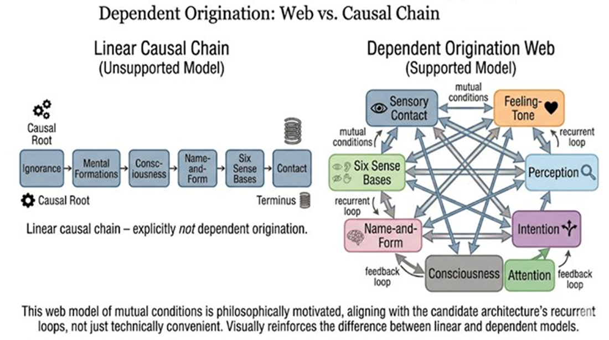

Part II — The Buddhist Deconstruction
Chapter 5: Emptiness and Dependent Origination
Why Nothing Stands Alone, and Why That Matters for Mind
5.1The Problem of Things
Chapter 4 dismantled the mind into parts. It showed that what we call 'mind' is not a stable entity but a stream of momentary events, citta and cetasikas, arising and passing in rapid succession. That alone is destabilizing enough. But the Madhyamaka philosophical tradition, associated above all with the second-century philosopher Nagarjuna, goes one level deeper. Even those momentary events, it turns out, are not as solid as they appear. This chapter asks: what is the nature of those events themselves?
We tend to assume that the world is made of things, objects, people, thoughts, emotions, each with a clear boundary, an identity, an existence of its own. Even after accepting that the self is constructed, we often retain the idea that at least the components are real, the building blocks are solid. The Abhidhamma deconstructs the house. Emptiness questions the bricks.
5.2What Emptiness Does Not Mean
The Sanskrit term sunyata is usually translated as emptiness, and this translation is deeply unfortunate. It suggests nothingness, absence, a void. It leads to predictable misreadings: nothing exists, everything is meaningless, reality is an illusion in the sense of being unreal. None of these are what the tradition means. The correct translation of what the term points to is something more like: things do not exist independently, inherently, or permanently. They exist dependently, relationally, conditionally. This is a very different claim from 'nothing exists'. It is a claim about how things exist.
Take a table. It appears stable, solid, self-contained. But examine it closely: it is made of wood shaped by tools assembled by a person, dependent on materials, causes, and conditions at every level. Remove the wood and there is no table. Remove the structure and there is no table. Remove the concept of 'table' from a mind that recognizes it and the thing in the room becomes something else, flat surface, obstacle, fuel. At no point in this examination do you find an independent tableness, some essential quality of being a table that exists apart from all the conditions that bring the table into being and make it recognizable as one.
5.3Dependent Origination: The Core Principle
This is formalized in what Buddhism calls dependent origination (paticca-samuppada): this arises because that arises; this ceases because that ceases. Nothing exists on its own. Everything arises in dependence on conditions, and ceases when those conditions change. Applied to experience: perception arises from sensory input together with prior conditioning, attention, and context. Emotions arise from perception together with memory and evaluation. Thoughts arise from prior thoughts together with associations and intentions. Nothing stands alone. Everything is co-arising, co-dependent, co-defined.
A common misreading sees dependent origination as simple linear causality: A causes B causes C. It is more subtle than that. Dependent origination describes a web of mutual conditions rather than a chain. In the web, A and B co-arise together; each is a condition for the other as well as for C. There is no single first cause at the beginning of the chain, no final anchor at the end. The web is self-sustaining and without a fixed center.

5.4Emptiness of the Self, and of Its Components
Chapter 4 established that the self is constructed from the five aggregates. Emptiness takes this further: even those aggregates are empty. Sensations depend on conditions: sense organs, objects, the right kind of contact. Perceptions depend on labelling and prior learning. Thoughts depend on prior states. None of these has an independent essence. There is no final 'thing' that experience is made of, only interdependent processes without inherent substance. It is a precise description of what is actually there: a dynamic web of mutual arising, none of which requires a foundation outside itself to keep going.
5.5Emptiness and Perception
This is not just metaphysics. It applies directly to how we see the world, and here it connects with what modern neuroscience has independently discovered. The brain does not receive reality directly. It predicts, fills in gaps, and constructs objects from sensory input plus prior expectation. What we experience is interpreted reality, not raw reality. Emptiness deepens this: not only is perception constructed, but the objects perceived have no independent existence. When you see an angry person, what is actually present? Facial expression, tone of voice, your interpretation, your emotional reaction. ‘Angry person’ is a label imposed on a dynamic process. The solidity you perceive is contributed by your perceiving.
5.6Emptiness and Causality
Dependent origination is often misunderstood as simple cause-and-effect: A leads to B. The Madhyamaka analysis is more careful. Thoughts influence emotions; emotions influence perception; perception influences thoughts. There is no single origin, no final driver, no central controller, only a mutually conditioning web. This has a direct parallel in neuroscience's discovery that the brain is not a linear processor moving from input to output, but a vast network of recurrent loops in which every region influences and is influenced by many others simultaneously.
5.7What Emptiness Means for Consciousness
Applied to consciousness itself: consciousness does not exist as a fixed, independent entity located somewhere in the brain or in experience. It exists dependently, arising through the interaction of sense organs, objects, mental factors, prior conditions, and the ongoing stream of mind-moments. There is no observer independent of the observed. There is a process in which both appear. The boundary between inner and outer, between subject and object, is constructed rather than found.
This has a direct consequence for the engineering question. You cannot build a consciousness module and plug it into a system, because consciousness is not a module. It is a relation, an emergent pattern in a system of mutually dependent processes. It will not be found in any single component. It will be found, if at all, in the dynamic interplay of processes that have no center, no fixed boundary, and no inherent essence.
5.8The Subtle Balance
Two errors remain tempting here and are worth naming briefly. The first is nihilism: if nothing has inherent existence, nothing matters. The second is reductionism: everything is just processes, so we can fully model it. Both are wrong. Emptiness removes inherent essence but not conventional reality and not irreducibility. The first-person fact of experience may be real and irreducible even in a world where nothing has independent existence.
5.9Closing line
If nothing exists independently, then nothing can be built in isolation. Not a self. Not a mind. Not even consciousness. Whatever consciousness is, it will not be found in a module or a circuit or a line of code. It will be found, if at all, in the dynamic interplay of processes that have no center, no boundary, and no fixed essence. And whether such a pattern can be engineered remains an open question.